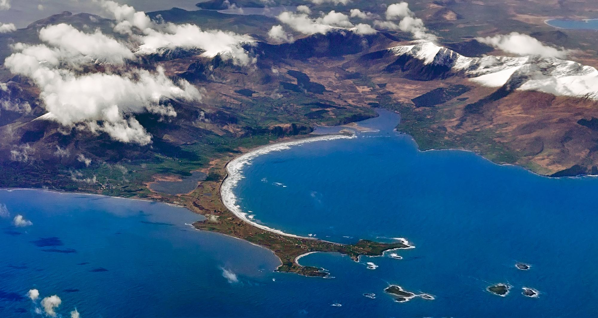

Register to learn of pop-up performances in the pubs and in spectacular natural settings on Dingle’s North Shore, in arrangements by Quatuor Ébène, the Danish String Quartet, Vision String Quartet and Philharmonix.
Cloghane and Brandon have no petrol station, ATM or pharmacy: the nearest are in Castlegregory.